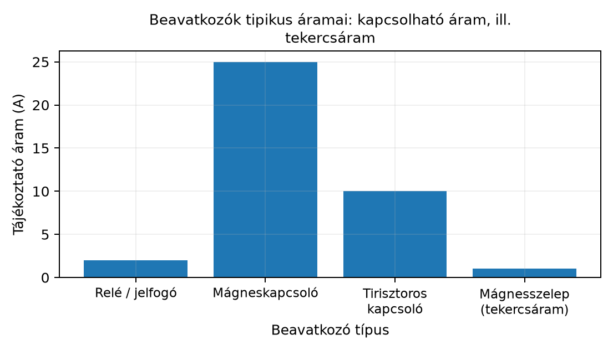

A külső hőmérséklet-érzékelő jele önmagában még nem fűt, és a jelenlétérzékelő sem kapcsolja fel helyettünk a lámpát. A szabályozó kimenete csak egy kis teljesítményű jel: egy relétekercs, egy analóg feszültség vagy egy busztávirat. Ahhoz, hogy ez a jel valódi fogyasztót kapcsoljon – motort, fűtőbetétet, szelepet, zsalut –, beavatkozó készülékekre van szükség. Ebben az alfejezetben ezeket a készülékeket és bekötési elveiket tanuljuk meg.
A beavatkozó az épületautomatika „keze és izma”: kis vezérlési energiával nagyobb teljesítményt kapcsol, és a folyamat fizikai mennyiségét – áramlás, hőmérséklet, fény, mozgás – megváltoztatja.
A legegyszerűbb beavatkozói minta az, amikor egy 24 V-os termosztátjel egy relé tekercsét kapcsolja, a relé munkaérintkezője pedig a 230 V-os szivattyúmotort. A vezérlési és a terhelési kör galvanikusan elválik egymástól.
A rajzon a felső hurok a vezérlőáramkör: a B1 termosztáról a 24 V a K1 tekercsre jut. Az alsó hurok a terhelőáramkör: az F1 kismegszakító után a K1 érintkező a fázist (L1) az M1 szivattyúmotorra kapcsolja, a motor másik kapcsa a nullára (N), fém teste a védővezetőre (PE) csatlakozik. A relé tekercse és érintkezője között nincs fémes kapcsolat, ezért a vezérlőoldal feszültségszintje és a terhelőoldal feszültségszintje eltérhet.
Definíció. A relé (jelfogó) olyan kapcsolókészülék, amelyben egy elektromágneses tekercs által létrehozott erő mozgat egy vagy több érintkezőt. A vezérlő oldal (tekercs) és a kapcsolt oldal (érintkezők) galvanikusan el van választva.
A relét kisteljesítményű jelek kapcsolására használjuk: épületfelügyeleti kimenet, termosztát, PLC-kimenet, egy másik relé segédérintkezője. A tekercs jellemző feszültsége lehet 12 V DC, 24 V DC, 24 V AC vagy 230 V AC. A relé nem motorindító eszköz, hanem jelfogó; katalógusban az érintkezőket gyakran AC-15 (váltakozó áramú vezérlőáramkör) vagy DC-13 (egyenáramú vezérlőáramkör) kategóriával adják meg.
Definíció. A mágneskapcsoló (kontaktor) nagyobb megszakítóképességű, mágneses működtetésű kapcsoló, amelyet motorok, fűtőkörök, szellőzők és más teljesítmény-fogyasztók kapcsolására terveztek. A főérintkezők mellett általában segédérintkezők is vannak.
A mágneskapcsoló főérintkezői motorindításra alkalmasak, mert elviselik a bekapcsolási áramlökést és a kikapcsoláskor keletkező ívet. A katalógusban a főérintkezőt AC-3 vagy AC-1 kategóriával jelölik; motoroknál az AC-3 a jellemző, ellenállásos fűtésnél az AC-1. A tekercs itt is 24 V DC, 24 V AC vagy 230 V AC lehet.
Definíció. A tirisztoros kapcsoló (SSR, angolul solid-state relay) félvezetőkből – triacból, tirisztorból vagy MOSFET-ből – felépülő, mozgó alkatrész nélküli kapcsoló. A bemeneti kis jel vezérli a teljesítmény-félvezetőt, ezért nincs mechanikus kopás és nincs kapcsolási ív.
Az épületautomatikai gyakorlatban az SSR-t akkor választjuk, ha nagyon gyakori kapcsolásra, zajtalan működésre vagy hosszú élettartamra van szükség. Hátránya, hogy a kimeneti félvezetőn nyugalmi áramban is lehet kis szivárgó áram, és a hűtéséről gondoskodni kell. Ellenállásos terhelésnél gyakran zérusátmenetnél kapcsoló (zero-cross) kivitelt használnak, amely a váltakozó feszültség nullaátmeneténél kapcsol, ezért kisebb a zavarkeltés.
Megjegyzés. A tirisztoros kapcsoló nem azonos a fényerő-szabályozó triaccal. Előbbi főként ki-be kapcsol, utóbbi a feszültség pillanatnyi kivezérlésével folyamatosan szabályoz.
Definíció. A mágnesszelep olyan elektromágneses beavatkozó, amelyben a tekercs mágneses tere egy mozgó vasmagot (dugattyút) húz be, és ezzel folyadék- vagy gázáramlást nyit, zár vagy vált át.
A mágnesszelepekben a villamos oldal a tekercs, a hidraulikus oldal pedig a szelep. Fűtési és légtechnikai rendszerekben tipikusak a 24 V AC, 24 V DC vagy 230 V AC tekercsű, kétállású (nyit/zárt) mágnesszelepek. A terven régebbi (DIN-alapú) gyakorlat szerint gyakran Y betűjelet kapják, az MSZ EN IEC 81346-2 szerinti jelölést a terv jelmagyarázata adja (ellenőrizendő: MSZ EN IEC 81346-2), a motoros fogyasztók pedig M jelölést. A tekercs teljesítményét látszólagos teljesítményként (VA) adják meg; gyártói adatból tudjuk, mekkora a bekapcsolási és a tartóáram.
Definíció. A szervomotoros beavatkozó (épületautomatikában gyakran „szelepmozgató” vagy „zsalumozgató”) hajtóművel és pozíció-visszajelzéssel ellátott motor. A bemenő jel általában 0–10 V, 2–10 V, 0–20 mA, 4–20 mA vagy buszjel, a tengely/mozgató kar pedig a jelnek megfelelő helyzetbe áll.
A szervomotoros mozgatót használjuk moduláló fűtési, hűtési és szellőzési szelepekhez, zsalukhoz, ablaknyitó karokhoz. Két alapfajtája a kétpontos mozgató (teljesen nyit vagy zár) és a folytonos mozgató (0–100 % között arányosan áll). A 2–10 V-os jel gyakran azt jelenti, hogy 2 V a 0 % állás, 10 V a 100 % állás; így a jelkábel szakadása esetén a mozgató biztonsági állásba állítható. Egyes mozgatók rugós visszatérésűek (spring return): feszültségkimaradáskor a rugó a szelepet lezárja vagy nyitja, ami tűzvédelmi és fagyvédelmi szempontból fontos lehet.
Definíció. A léptetőmotor olyan motor, amelynek tengelye a vezérlőimpulzusok hatására meghatározott, rögzített szöglépésekkel forog. Nyílt hurkú pozíció-beállításra alkalmas, mert a lépésszámból számítható a tengely helyzete, amennyiben nem lép fel lépésvesztés.
Az épületautomatikában a léptetőmotort kisebb golyóscsapok, motoros radiátorszelepek, laboratóriumi szellőzőfúvókák és precíziós zsaluk mozgatására használják. A gyakorlatban a szervomotoros mozgató és a léptetőmotor közötti választást a pontosság, a nyomatékigény, a visszajelzés és a költség dönti el.

Az ábra csak arányokat mutat: a relé kis vezérlőáramot, a mágneskapcsoló motorokat, az SSR közepes és gyakori kapcsolású ellenállásos terhelést, a mágnesszelep oszlopa pedig nem kapcsolási képesség, hanem a tekercs saját áramfelvétele, amelyet a vezérlő kimenetének kell kapcsolnia. A pontos értéket minden esetben a gyártói adatlap alapján kell megválasztani.
A tervlapon a beavatkozót a rajzjel, a referenciajel és a kapocsjelölés azonosítja. A kiválasztás előtt az alábbi adatokat kell kiolvasni vagy a tervezői kiírásból pótolni:
A gyakorlati képlet egyfázisú motoros fogyasztó áramfelvételéhez:
ahol a leadott mechanikai teljesítmény, a kapocsfeszültség, a teljesítménytényező, a hatásfok.
Számítás. Egy 230 V-os, 1,5 kW-os keringtető szivattyú adatai: , . Keressük a névleges áramfelvételt.
Motorhoz AC-3 használati kategóriájú mágneskapcsolót választunk (MSZ EN 60947-4-1), amelynek AC-3 névleges üzemi árama legalább a motor névleges árama: 9,6 A → pl. 12 A AC-3 (ellenőrizendő: gyártói adatlap). Az AC-3 kategória már tartalmazza a kalickás motor közvetlen indításának áramlökését; nagyobb kapcsolót gyakori kapcsolásnál, léptetésnél, ellenáramú fékezésnél (AC-4) vagy nehéz indításnál választunk. A 9,6 A-es üzemi áramra méretezett 10 A-es relé, ha csak ellenállásos terhelésre készült, nem megfelelő motorindításhoz.
Számítás. Egy fűtési zóna mágnesszelepe 24 V AC, 12 VA látszólagos teljesítményű. Az áramfelvétel:
Ez a tartóáram. Váltakozó áramú tekercsnél a behúzás pillanatában az áram ennek többszöröse is lehet (a gyártói adatlap behúzó VA-értékéből: ), ezért a vezérlőkimenetnek a bekapcsolási áramot is el kell viselnie. Ha a vezérlő kimenete csak 0,1 A-es relé, akkor nem szabad közvetlenül a mágnesszelepet kapcsolni, hanem egy nagyobb segédrelét kell beiktatni, vagy a mágnesszelepet önálló tápegységről kell megtáplálni.
Továbbvitt eredmény. A beavatkozó kiválasztásához használt osztályozás – relékimenet, analóg 0–10 V / 4–20 mA, PWM, két- vagy többállású működés, rugós visszatérés – alapja annak, hogy a KNX, DALI és más épületautomatikai rendszerek alfejezetben a beavatkozókat buszrendszerre illesszük.
A beavatkozót a környezetéhez kell illeszteni. Az IP-kód (MSZ EN 60529) két számjeggyel jelzi a védettséget: az első a szilárd testek és por elleni, a második a víz elleni védelmet adja meg.
Szabvány. A védettségi fokozatot az MSZ EN 60529 szerinti IP-kóddal kell jelölni; az előírt fokozatot a gyártói adatlap és az adott helyiség kialakítása határozza meg. A kapcsolókészülékek használati kategóriáit és az élettartam-adatokat a vonatkozó kapcsolókészülék-szabvány (például MSZ EN 60947 sorozat) szerint kell figyelembe venni (ellenőrizendő: aktuális kiadás és a gyártói dokumentáció).
A környezeti hőmérséklet is terhelhetőséget befolyásol: a relé- és SSR-kimenet árama magas környezeti hőmérsékleten csökkenhet, az SSR esetében pedig a hűtőborda mérete és a szekrény szellőzése a kiválasztás része.
Biztonsági korlát. A bekötést csak feszültségmentes állapotban, megfelelő jogosultsággal és a helyszíni munkaengedély szerint végezd. Hálózati feszültségű munka önálló gyakorlása tanulóként tilos.
A fenti sorrend a hibák nagy részét megelőzi, mert előbb a kis energiájú, törpefeszültségű vezérlőkört vizsgáljuk, és csak utána kapcsoljuk a nagyobb energiájú terhelőkört.
Egy társasház fűtési elosztójában a helyiségtermosztát 24 V-os, potenciálmentes relékimenettel vezérelte a keringtető szivattyút. A kivitelező először közvetlenül a termosztát reléjére kötötte a 230 V-os szivattyút. A kapcsolás egy ideig működött, majd a termosztát belső reléjének érintkezője összeégett, mert a relé csak a 24 V-os vezérlőkört és nem a motoros terhelést volt hivatott kapcsolni. A helyes megoldás az lett, hogy a termosztát kimenete egy teljesítményrelét vezérelt, és a teljesítményrelé zárta a szivattyú 230 V-os áramkörét. Ennél súlyosabb következmény is lehetett volna: a törpefeszültségű vezérlőkörre tervezett reléhez kötött 230 V a 24 V-os vezetékekre és a termosztátra is átkerülhet (az elválasztás nem 230 V-ra készült), ami áramütésveszély. Hálózati feszültséget csak arra méretezett, ennek megfelelően jelölt kimenetre szabad kötni. A tanulság: a beavatkozó kiválasztásakor nemcsak a kapcsolt feszültséget, hanem a terhelés áramát, bekapcsolási löketét és a gyártói használati kategóriát is ellenőrizni kell.
Hiba 1: a relé érintkezőjét egyszerűen „10 A-esnek” tekinti, áramlökés nélkül. Egy motor névleges árama 9 A lehet, de az indítási lökés ennél többszörös. Az ellenállásos terhelésre szánt AC-1 érintkező az indítási ív miatt heged, összeéghet. A helyes gyakorlat: motorhoz AC-3 mágneskapcsolót vagy motorrelét kell választani.
Hiba 2: a 24 V-os vezérlőrelé 230 V-os tekercsűre cserélése. Ha a vezérlő kimenete 24 V-ot ad, a 230 V-os tekercs nem húz meg, vagy veszélyes hálózati feszültség kerül a törpefeszültségű (24 V-os) vezérlőáramkörbe. A tekercsfeszültséget mindig a vezérlőjelhez kell igazítani.
Hiba 3: az SSR rossz terhelésre kötve. Ha egy zérusátmenetnél kapcsoló SSR-t induktív motorhoz vagy rossz minimális terhelésű LED-hajtáshoz kötünk, a kimenet szivárgó árama miatt a LED halványan világíthat, vagy a motor megzavarodhat. Az SSR-t a terhelés típusához és a gyártói adatlaphoz kell illeszteni, a szükséges hűtéssel együtt.
Hiba 4: a szervomotoros mozgató analóg bemenetére 230 V-ot kötnek. A 0–10 V-os bemenet nem hálózati feszültségű bemenet; 230 V rákapcsolása azonnal tönkreteszi a vezérlő elektronikát. A jel- és a hálózati kábelt külön kell vezetni, és a bekötést a kapocsjelölés szerint kell elvégezni.
1. feladat (A). Fogalmazd meg, mi a különbség a relé és a mágneskapcsoló között a felhasználás és a kapcsolási képesség szempontjából.
2. feladat (A). Egy beavatkozó tekercsét 24 V DC-ről táplálják, felvett teljesítménye 2,4 W. Mennyi a tekercs árama?
3. feladat (B). Válassz mágneskapcsolót egy háromfázisú, 400 V-os, 5,5 kW-os szellőzőmotorhoz. Adott: , . Számítsd ki a névleges áramot, és indokold a választott mágneskapcsoló névleges áramát.
4. feladat (B). Rajzold le szövegben vagy kapcsolási vázlaton, hogyan kapcsol egy 24 V-os épületfelügyeleti kimenet egy 230 V-os fűtőkört: a vezérlő K1 reléjének tekercsét a 24 V-os kimenet táplálja, a K1 érintkező pedig a fűtőkört zárja. Nevezd meg a kapcsokat és a védelmet.
5. feladat (C). Egy tervező egy 10 A-es, AC-1 kategóriájú relét írt ki egy 230 V-os, 1,5 kW-os szivattyú kapcsolására. Értékeld, hogy elfogadható-e a megoldás, és ha nem, mit javasolnál.
6. feladat (D). Egy mágnesszelep nem nyitja ki a fűtési kört. A vezérlő kimenetén 24 V AC mérhető, a tekercs kapcsán azonban nincs feszültség. Milyen hiba valószínű, és milyen méréssel ellenőriznéd?
1. megoldás. A relé elsősorban vezérlési jelek, kis teljesítmények kapcsolására való, érintkezője kisebb megszakítóképességű. A mágneskapcsoló nagyobb motoros és fűtési terheléseket kapcsol, főérintkezői nagyobb áramot és ívet viselnek el, gyakran segédérintkezőkkel is rendelkezik.
2. megoldás. Adott: , . Keresett: .
A tekercs árama 0,1 A.
3. megoldás. Adott: , , , . Keresett: .
Számoljuk a nevezőt: ; ; . Ezért
Motorhoz AC-3 kategóriájú mágneskapcsoló választható, amelynek AC-3 névleges üzemi árama legalább a motor névleges árama: 11 A-hez pl. 12 A AC-3 (ellenőrizendő: gyártói táblázat). Az AC-3 érték már tartalmazza a közvetlen indítást; a 16 A-es készülék is megfelel, de nem indítás miatt kell nagyobb.
4. megoldás. A kapcsolás szöveges leírása: a 24 V-os kimenet egyik pólusa a K1 tekercs A1 kapcsára, a másik pólusa az A2 kapcsára kerül. A K1 relé egy munkérintkezője a 230 V-os fűtőkört zárja: a fázis (L1) a K1 érintkező egyik kapcsára, az érintkező másik kapcsa a fűtőtestre, a fűtőtest másik oldala pedig a nullára (N) csatlakozik. A fűtőkört a terheléshez méretezett kismegszakító védi, és a vezérlőkört is megfelelően kell védeni.
5. megoldás. A megoldás nem megfelelő, mert a szivattyú motoros, induktív terhelés, és az AC-1 kategóriájú relé nem motorindításra készült. Bár a névleges áram mintegy 9,6 A, a bekapcsolási áramlökés az érintkezőt hegesztheti. Motoros terheléshez AC-3 mágneskapcsolót javaslunk, amelynek AC-3 névleges árama legalább 9,6 A (pl. 12 A; ellenőrizendő: gyártói adatlap).
6. megoldás. Ha a tekercs kapcsán nincs 24 V, de a vezérlő kimenetén van, akkor a hiba a vezetékben, a csatlakozóban vagy a biztosítóban lehet. Ellenőrizd a vezeték folytonosságát feszültségmentes állapotban, mérd meg a tekercs ellenállását, és ellenőrizd a kötések meghúzását. Ha a folytonosság ép, és a tekercs ellenállása nem szakadt, akkor a vezérlő felé visszafelé is mérj, hogy a vezérlő valóban terhelhető-e.
A relé kis vezérlőjeleket kapcsol, a mágneskapcsoló motorokat és nagyobb terheléseket, a tirisztoros kapcsoló pedig mozgó alkatrész nélkül, gyakori kapcsolásra alkalmas. A mágnesszelep villamos jelből áramlást nyit vagy zár, a szervomotoros beavatkozó analóg jel alapján arányos pozícióba áll, a léptetőmotor pedig rögzített lépésekkel mozog. Kiválasztáskor a terhelés típusát, áramát, a bekapcsolási lökést, a kapcsolási gyakoriságot, a vezérlőjel fajtáját és a környezeti védettséget kell figyelembe venni. Motorhoz AC-3 kategóriájú mágneskapcsolót, ellenállásos terheléshez AC-1 relét vagy SSR-t választunk. Az áramfelvételt a összefüggésből számítjuk. A bekötés előtt a feszültségmentesítés öt szabályát kell alkalmazni, és először a törpefeszültségű (24 V-os) vezérlőkört kell ellenőrizni. Továbbvitt eredmény: a beavatkozó típusa, jelkezelése (relé, analóg, PWM) alapozza meg a KNX, DALI és más épületautomatikai rendszerek alfejezetben tárgyalt buszos beavatkozók kiválasztását.
A fejezetben használt védettségi jelölés forrása az MSZ EN 60529, a kapcsolókészülékek használati kategóriáinak forrása a vonatkozó MSZ EN 60947 szabványsorozat. A konkrét névleges áram, kapcsolási kategória, IP-fokozat és hűtési adat gyártónként és típusonként eltér, ezért a kivitelezés előtt mindig ellenőrizni kell az aktuális gyártói adatlapot és a vonatkozó kivitelezési előírást.